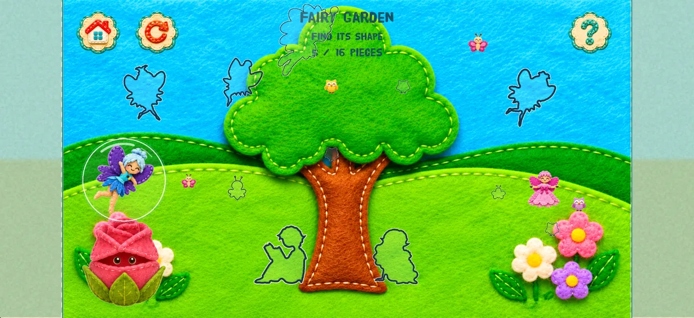

Cenários para encaixar formas
Coloca cada personagem de feltro na silhueta correspondente e completa o cenário passo a passo.
Jogo de puzzles para crianças · iOS
Um mundo macio de feltro cheio de puzzles simples para mãos pequenas.
Mini Funny Puzzles é um jogo para crianças com um alegre novo design em feltro. Encaixa formas, arrasta a chave até à caixa, descobre um pequeno jogo da memória e explora cenários simpáticos como Ocean Friends, Little Animals e Fairy Garden.
Novo design disponível em breve ↓
Descobre Mini Funny Puzzles
A ficha atual da App Store ainda mostra o estilo visual anterior. A nova versão em feltro apresentada aqui está a ser preparada e será publicada no mesmo link da App Store.
A nova direção artística transforma o jogo numa suave caixa de brinquedos em feltro, cheia de cores vivas, rostos simpáticos e formas claras. As interações continuam fáceis de entender para as crianças e os cenários ficam mais divertidos e mais cuidados.
Coloca cada personagem de feltro na silhueta correspondente e completa o cenário passo a passo.
Descobre temas divertidos como Ocean Friends, Little Animals, Fairy Garden, Funny Monsters e muito mais.
Vira cartas e encontra pares simples num layout calmo pensado para crianças pequenas.
As compras integradas e as ações externas ficam na área dos pais.
Para abrir a área dos pais, é preciso manter o botão premido durante alguns segundos.





Mini Funny Puzzles foi pensado para crianças, enquanto a área dos pais mantém as ações da loja separadas. Aí existem compras integradas opcionais para a versão completa ou conteúdo extra, e a abertura exige uma curta pressão prolongada.
Mini Funny Puzzles está atualmente disponível na App Store através da ficha existente “Amazing Mini Puzzles Boxes”. O futuro redesign em feltro manterá o mesmo link da App Store.